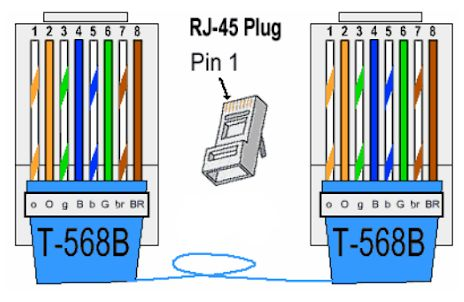
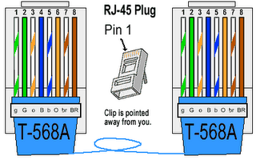

Alan Abramowski
Klasa 2 TIF
Lekcja 14. Temat: Rj45 i moduł keystone.
Kable Rj45 występują w dwóch standardach. Standard B, najczęściej używany w Polsce i standard A. Różnią się one ułożeniem kabli.

Wtyki Rj45 mają także różne rodzaje, zależne od klasy stosowanej skrętki.
1. Wtyk modularny RJ45 na kabel FTP kat. 5
2. Wtyk modularny RJ45 na kabel UTP kat. 6
3. Wtyk modularny RJ45 na kabel UTP kat. 5
4. Wtyk modularny RJ45 na kabel UTP kat. 5e z zaciskiem na każdą żyłę trzema zębami
 Moduły keystone przeznaczone są do budowy gniazd, pozwalających na dostęp do internetu. Współpracują one z wtykami Rj45 i podobnie jak one posiadają dwa standardu.
Moduły keystone przeznaczone są do budowy gniazd, pozwalających na dostęp do internetu. Współpracują one z wtykami Rj45 i podobnie jak one posiadają dwa standardu.
 Mają one także różne właściowości np. ekranowanie lub różne kategorie sieci.
Mają one także różne właściowości np. ekranowanie lub różne kategorie sieci.